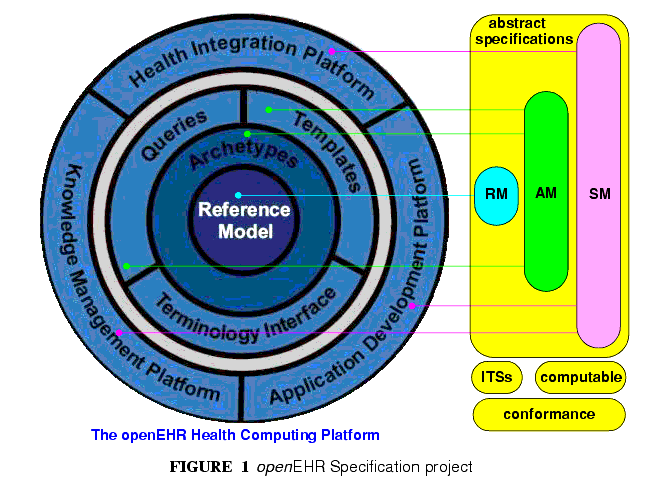

2 Overview
This document provides an overview of the openEHR architecture. It commences with a description of the specification project, followed by an overview of the reference model structure and packages. Key global semantics including security, archetyping, identification, version and paths are then described. The relationship to published standards is indicated, and finally, the approach to building Implementation Technology Specifications (ITSs) is outlined.
2.1 The openEHR Specification Project
FIGURE 1 illustrates the openEHR Specification Project. The project consists of requirements, architectural specifications, implementation technology specifications (ITSs), and conformance specifications. The focus of this document is the architectural and implementation technology specifications (ITSs).

The architecture specifications consist of the Reference Model (RM), the Service Model (SM) and Archetype Model (AM). The first two correspond to the ISO RM/ODP information and computational viewpoints respectively. The latter formalises the bridge between information models and knowledge resources.
The architecture specifications published by openEHR are defined as a set of abstract models, using the UML notation and formal textual class specifications. These models remain the primary references for all semantics, regardless of developments in any implementation environment. The openEHR Modelling Guide describes the semantics of the models. The presentation style of these abstract specifications is deliberately intended to be clear and semantically close to the ideas being communicated. Conversely, the specifications do not follow idioms or limitations of particular programming languages, schema languages or other formalisms. All such expressions are treated as ITSs, for which explicit mappings generally have to be developed and described (since almost no implementation formalism natively implements complete UML semantics).
There are numerous implementation technologies, ranging from programming languages, serial formalisms such as XML, to database and distributed object interfaces. Each of these has its own limits and strengths. The approach to implementing any of the openEHR abstract models in a given implementation technology is to firstly define an "implementation technology specification" (ITS) for the particular technology, then to use it to formally map the abstract models into expressions in that technology.
|
openEHR Foundation http://www.openEHR.org |